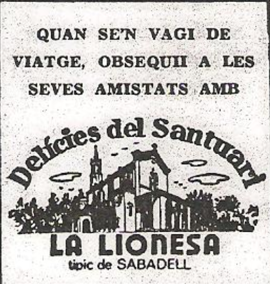

Cuando un médico se jubila, deja atrás una larga lista de hechos y de anécdotas, y con ellos tras una dilatada vida de atención a la ciudad, se va también un poco de historia en su proyección ciudadana. Más aun si este médico empezó ejerciendo en aquel Sabadell «de antes de la guerra», del que han variado tantas cosas, incluyendo el propio estilo en el ejercicio de esta profesión.
El Dr. Francisco Mena de la Torre ha cumplido, el 29 del pasado mes de mayo, sus 70 años, y se jubila. Ha ejercido sólo hasta el día 28, porque la computadora oficial es eficiente hasta este punto, y en tal fecha pasa automáticamente a la reserva, cerrando un largo capítulo de dedicación, que empezara cuando en la promoción de 1931, en la Facultad de Medicina de Barcelona terminara su carrera, al mismo tiempo que otros hombres que más tarde prestigiaron como él la medicina española, como los doctores Piulachs, Frouchtman, Ley, Gisbert Queraltó, Pursell y tantos otros, que aprendieron de aquellos «cátedros», eminentes y casi legendarios, como eran los Pedro Pons, Trias, Saforcada o Pi Sunyer.
Mena de la Torre nació el 29 de mayo de 1909, en Ceuta. Par imperativos de la profesión de su padre, el Coronel Arturo Mena, y por ello sujeto a cambios de destino, recaló en Barcelona en cuya Facultad empezó y terminó sus estudios, como médico ciru- jano. No había por entonces especialidades, y todos los médicos eran de medicina general y cirugía, aunque algunos operaban y otros no. Más tarde vino la especialización.
Terminada recientemente su carrera, el joven doctor abre un consultorio en la calle Rocafort de Barcelona, y alterna su trabajo con el de interno pensionado en el Hospital Clínico, en el departamto de cirugía.
Poco tiempo después, el 5 de febrero de 1932, en la Clínica La Alianza de Sabadell, cae enfermo el Dr. Balcells, y como suplente, mientras se repone, tiene la oportunidad el Dr. Mena de ocupar su sitio.
El cirujano de La Alianza era el Dr. Masoliver, que vivia en Barce-
lona. Ello daba lugara que, en algunas urgencias, se presentaran algunos problemas. Mientras Mena de la Torre estuvo allí se dieron un par de casos de esta indole, que él pudo solventar perfectamente; tanto es así que, cuando ya el Dr. Balcells se hubo repuesto y volvía a su puesto de medicina general, le pidieron que se quedara, porque en la parte de cirugía había demostrado su competencia.
El Dr. Mena no pensó mucho la propuesta de la Junta de La Alianza. En 1932, un sueldo de 1000 pesetas al mes era intere- sante a todas luces, y aceptó el cargo, que simultaneó, durante dos años, con su consultorio de Barcelona. Más tarde estableció una Consulta en Sabadell, en la calle de Gracia, 89, al lado de la- Relojería Roca, del que luego camb aría para establecerse en la finca chaflån Escuela Pía con Cap- many, que era propiedad de los Garina, pero que adquirió algunos años más tarde, y finalmente a la calle San Lorenzo, 16, en 1971.
Sus lugares de trabajo fueron siempre La Alianza, el Consultorio de la Seguridad Social, el Departamento de Accidentes de la Mutua Sabadellense, y su propia consulta.
Cuando el Dr. Mena llegó a Sabadell, la población tenía sobre los cuarenta y seis mil habitantes. El contaba 22 años, y en nuestra población había dieciocho médi- cos, el más joven de ellos diez años mayor que el joven recién llegaco, y era el Dr. Balcells.
Entre los médicos de más re- nombre de la época, podmos citar a los doctores Civil, Aymà, Relat, Vallribera y Bedós, hombres todos ellos plenamente dedicados a su profesión desde hacía varios años, y con un excelente crédito ciuda- dano.
Mena de la Torre, a pesar de su juventud, que en principio inspiró a sus colegas algunas reservas, se hizo pronto amigo de todos.
De entre los médicos de la población, el que tenía fama de levantarse más temprano era el Dr. Bedós, que antes de las 8 de la mañana ya estaba en la calle. Era este un título que tenía a mucho honor.
Sucedía que, en aquel tiempo, prácticamente nadie dejaba el co-
che en la calle. Si lo hacía muchas veces el Dr. Mena, cuando llegaba. de noche de Barcelona, y no se. molestaba en abrir la pesada puer- ta del «Garage Ford» de la Vía Massagué, donde lo encerraba. Así es que, algunas mañanas, cuando el Dr. Bedós salía a la calle ya veía el coche del Dr. Menal delante de su casa, lo cual le daba a entender que había madrugado más que él, hecho que, aparte de extrañarle, le producía cierta emu- lación, por aquello de la fama dell número uno madrugador.
Cuando el Dr. Mena, un dia que se encontraron en el Casino, le explicó por qué su Balilias estaba en la calle a tan temprana hora de la mañana, el Dr. Bedós respiró tranquilo.
Sabida es la costumbre de la época de tener al médico de con- fianza de la Familia «aconductat», o abonado a una cuota mensual. La mayoría de familias tenían su médico fijo, y po cinco o diez pesetas al mes tenían derecho a visitas particulares o domiciliarias siempre que lo necesitaban. Una visita normal, sin estar abonado, venía a costar cinco pesetas.
En la historia médica del Dr. Mena existe un caso excepcional. que tuvo en su tiempo fuerte impacto entre sus colegas euro- peos y americanos. El caso empe- zó cuando se presentó en su con- sultorio un hombre que se quejaba de una dolencia en el tobillo, que ya había estado de baja anterior- mente, cuyas exploraciones radio- gráficas no daban indicio alguno de existir mal, por la cual incluso era tachado de simulador. El Dr. Mena le encontró un pequeño bulto y le operó para saber de qué se trataba, resultando ser un «fi- broma artriticular», pieza que foto- grafió antes de realizar la biopsia.
En efecto, es una «pieza» que no Ise aprecia mediante radiografías.
Días más tarde, el Dr. Mena presentó este caso en el Congreso Internacional de Lisboa, donde asistió con traumatólogos del «Hospital de Sant Pau», y al que concurrieron 400 médicos de to-" das las nacionalidades. Publicó sus experiencias en una revista inglesa, y resultó que en toda la literatura mundial, solamente se habían dado dos casos parecidos en Norteamérica. Fue, en la época allá por 1956, todo un suceso.
El Dr. Mena es uno de los médi- cos de aquella escuela para los cue no existían ni domingos ni festivos. El cliente era lo primero, y a toda hora. Era otra época, en la que también existían sus prejui- cios y sus rarezas, como las de aquel doctor que cobraba un duro de plata por sus consultas, pero no lo tomaba en su mano, sino que hacía que su cliente lo depo- sitara en un recipiente en el que vertia una buena cantidad de al- cohol, para evitar el peligro de contagios. Naturalmente, un mé- dico está siempre expuesto a peli- gros mayores del que dimana del contacto con las monedas.
Desde muy joven, en la Uni- versidad, ya se jugaba al ajedrez. Fue campeón en el Club Alfil y en 1932 de Sabadell. Ha sido dos veces Presidente del Club de Aje- drez Sabadell, y en su primer
mandato trajo a nuestra ciudad al famosa campeón del mundo, el Dr. Alekine. con el que jugó una partida.
Hace cincuenta años se jugaba al ajedrez en el Centro Industrial, en el Español, el Casinet y en i Círculo, en la calle de Bélgica, entre otros, pero después se unifi- caron y fundaron el Club, que ha conocido diversos locales sociales, como el Musical, un piso de la Rambla encima de la Charcuteria Barcanona, un local en los bajos de Sindicatos. la Cooperativa en b calle del General Mola y el Ca- sinet.
El más famoso jugador que ha dado el ajedrez local ha sido Albareda, de categoría internacio- nal reconocida. Ahora el Club, del que el Dr. Mena es Presidente. milita en Categoría Preferente, la máxima nacional, y lo importante del caso es que hay afición entre los jóvenes, que el Club está muy bien considerado en el ajedrez do en catalán, y que la entidad cuenta con 200 socios, lo que no quiere decir que tenga solventados sus problemas económicos, ya que gastos siempre los hay. Pero se sigue adelante, que es lo que importa.
Sobre los años de 1933 6 1934, el Dr. Mena era el médico del Aero Club, que tenía su local social en la finca de los «Sostres>> en la Via Massagué esquina con Escuela Pía, en el primer piso.
Era la época en que ostentaba la presidencia el Sr. Campmajó, y se reunían socios tan conocidos co- mo los señores Inglada, Ribalta, Gilabert, Montal y otros.
El Aero-Club disponían de una avioneta «Farma», capaz para ocho plazas, con la que habian. dado muchas vueltas sobre Barce- lona, en más de una ocasión.
Todo ya es historia. Una peque ña parte de este acontecer diario sabadellense, con el que todos vamos formando el relato de los años que nos tocan vivir. Ahora, el doctor, se acogerá a la tranqui lidad de su retiro, atenderá a unos cuantas amigos de toda la vida, porque el médico es médico siem pre, y seguirá disfrutando movien- do pecnes, torres y caballos, por- que en el ajedrez no hay edad tope para la jubilación. Y él tiene cuerda para rato.